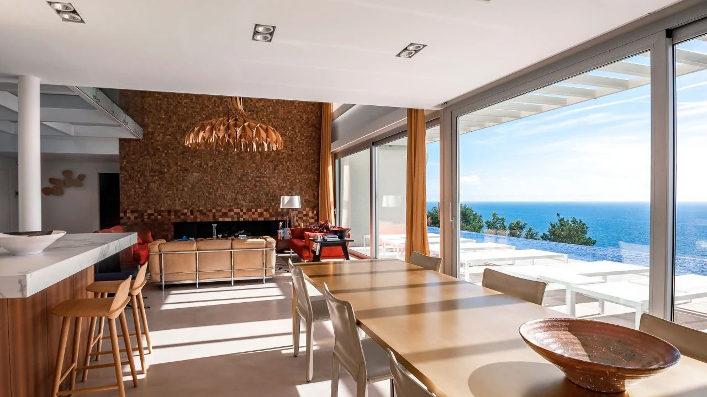
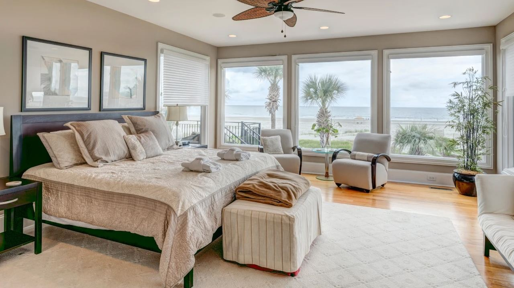
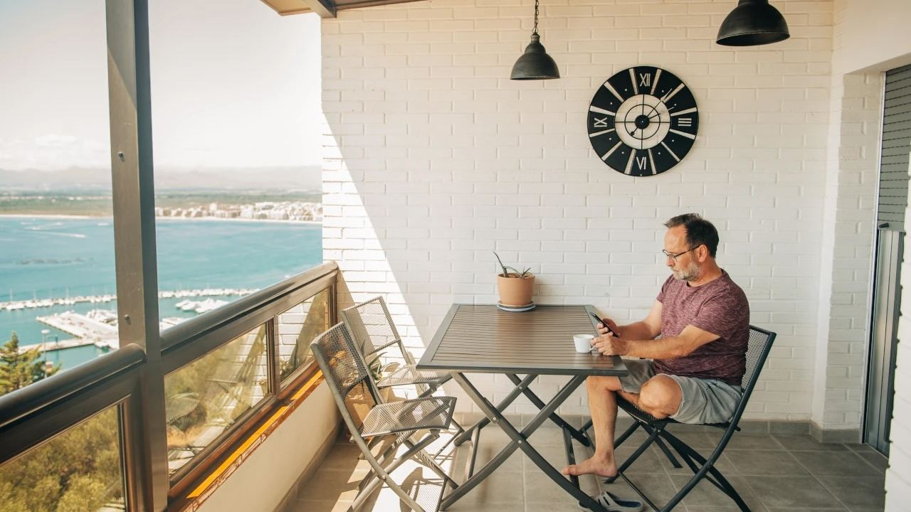
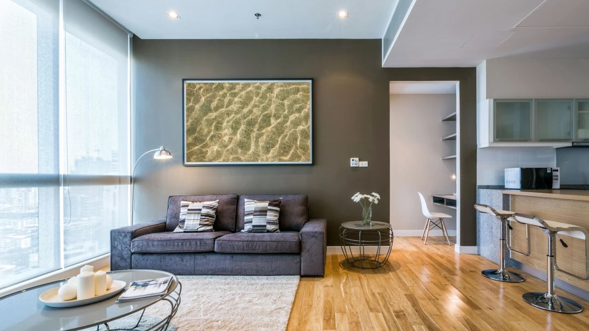

Ser propietario en España · Práctico
Cuidar su vivienda en España mientras está fuera
 Por Aleksandra Kobus · · actualizado · 3 min de lectura
Por Aleksandra Kobus · · actualizado · 3 min de lectura

En resumen: Muchas segundas viviendas pasan meses vacías. Un servicio de custodia de llaves o de cuidado del hogar visita la casa con regularidad para detectar fugas, humedades, cortes de luz o intrusiones, ventila, abre los grifos, enciende un rato el aire acondicionado, recoge el correo y es el contacto para la central de alarmas y la comunidad. Las revisiones quincenales básicas cuestan desde unas decenas de euros al mes; la gestión completa del alquiler suele cobrarse con un porcentaje de los ingresos. Prepare la vivienda antes de irse, domicilie los recibos y compruebe que su seguro cubre ausencias largas.
Una casa junto al mar necesita atención aunque no viva nadie. La humedad, los temporales, los cortes de luz y los desagües atascados dañan más las viviendas vacías de lo que parece, y un buzón lleno avisa de que el dueño no está.
Le explicamos qué hace un servicio de cuidado del hogar, cuánto cuesta y cómo dejar la vivienda preparada para irse tranquilo.
Qué hace un servicio de cuidado del hogar

Una empresa de custodia de llaves guarda un juego de llaves y revisa la vivienda con una frecuencia fija, normalmente semanal o quincenal. Una visita típica incluye:
- comprobar puertas, ventanas, persianas y alarma,
- buscar fugas, humedades, moho e insectos,
- abrir grifos y tirar de la cadena para que los sifones no se sequen,
- ventilar y encender un rato el aire acondicionado,
- revisar nevera, cuadro eléctrico y termo tras un corte de luz,
- recoger y reenviar el correo,
- un breve informe con fotos.
Suele haber servicios extra: revisiones tras temporales, limpieza y ropa de cama antes de su llegada, compra, jardín y piscina, citas con técnicos y pequeñas reparaciones. La empresa también puede ser el contacto de la central de alarmas y del administrador de la comunidad, algo importante porque la central llama a un contacto local, no a usted.
Cuánto cuesta
| Servicio | Precio habitual |
|---|---|
| Custodia de llaves y revisión quincenal | desde unas decenas de euros al mes para un piso |
| Revisión semanal de una villa con jardín y piscina | más, según el tamaño |
| Preparación de llegada, limpieza, ropa de cama | por visita |
| Mantenimiento de jardín y piscina | contrato mensual |
| Gestión completa del alquiler vacacional | normalmente un porcentaje de los ingresos |
Los precios varían mucho según zona, tamaño y servicios, así que pida dos o tres presupuestos por escrito. El coste es pequeño frente al de una fuga que pasa dos meses sin detectarse.
Antes de irse: lista de comprobación

- Agua: cierre la llave de paso, o al menos la del termo, salvo que el riego o la piscina la necesiten.
- Luz: deje la nevera vacía, apagada y abierta, desenchufe aparatos y mantenga encendidos la alarma, el router y las cámaras.
- Humedad: deje las puertas interiores abiertas, valore un deshumidificador con temporizador y no deje toallas húmedas ni comida.
- Exterior: recoja o sujete los muebles de terraza y cierre los toldos antes de la época de temporales.
- Recibos: domicilie luz, agua, comunidad e IBI en una cuenta española.
- Seguro: lea la póliza. Algunas excluyen daños si la vivienda está desocupada mucho tiempo o exigen visitas periódicas.
- Dispositivos: los detectores de fugas y un enchufe inteligente para el router son baratos y útiles. Las cámaras solo pueden grabar su vivienda, no zonas comunes ni la calle.
Una vivienda que parece habitada y se visita con frecuencia es también la mejor protección contra la okupación. Lo explicamos en nuestra guía sobre okupas en España.
¿Cuidado del hogar o gestión del alquiler?
Si quiere que la vivienda genere ingresos mientras está fuera, un gestor de alquiler va más allá: anuncios, reservas, entrada de huéspedes, limpieza entre estancias, registro de viajeros e impuestos. Solo es posible con licencia turística, o como alquiler de larga duración o de temporada.
Si usa la vivienda sobre todo usted, basta con el cuidado básico. Muchos propietarios combinan ambos: alquiler en temporada alta y cuidado el resto del año.
Cómo elegir empresa
- Empresa registrada, con contrato escrito y precios claros.
- Seguro de responsabilidad civil y un sistema seguro de llaves.
- Informes con fotos fechadas tras cada visita.
- Localizable por teléfono o mensajería.
- Referencias de propietarios del mismo residencial o zona.
Preguntas frecuentes
¿Cada cuánto hay que revisar una vivienda vacía?
Lo habitual es cada una o dos semanas, más una visita tras temporales o cortes de luz. Las villas con piscina y jardín suelen necesitar visitas semanales.
¿Cuánto cuesta la custodia de llaves en España?
La custodia básica con revisiones periódicas parte de unas decenas de euros al mes para un piso. Las villas y los servicios extra cuestan más.
¿Cubre el seguro una vivienda desocupada?
No siempre. Algunas pólizas limitan la cobertura tras un tiempo de ausencia o exigen visitas periódicas. Revise las condiciones y guarde los informes.
¿Debo cerrar el agua al irme?
Normalmente sí, al menos la llave general o la del termo, salvo que el riego o la piscina necesiten agua.
¿Puede la empresa de cuidado alquilar mi vivienda?
Muchas ofrecen gestión de alquiler, pero el vacacional exige licencia turística. Sin ella, solo se permite alquiler de larga duración o de temporada.
Compre una vivienda fácil de cuidar

Las viviendas en residenciales bien gestionados, con seguridad y jardines comunes, son mucho más fáciles de dejar durante meses. Escríbanos y le enseñaremos viviendas pensadas para propietarios a tiempo parcial y le presentaremos empresas locales de cuidado del hogar.